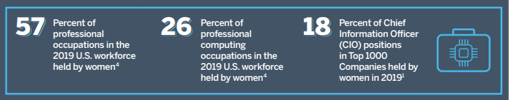
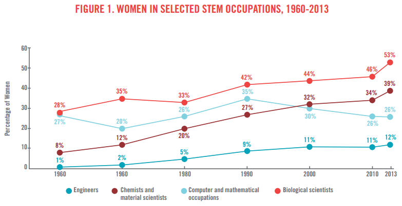
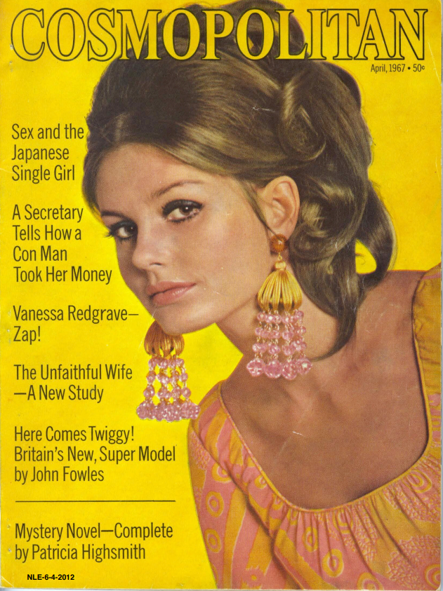
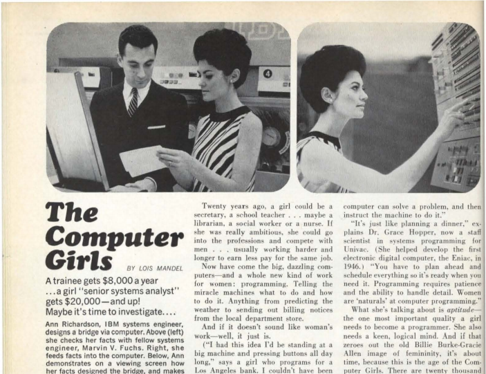
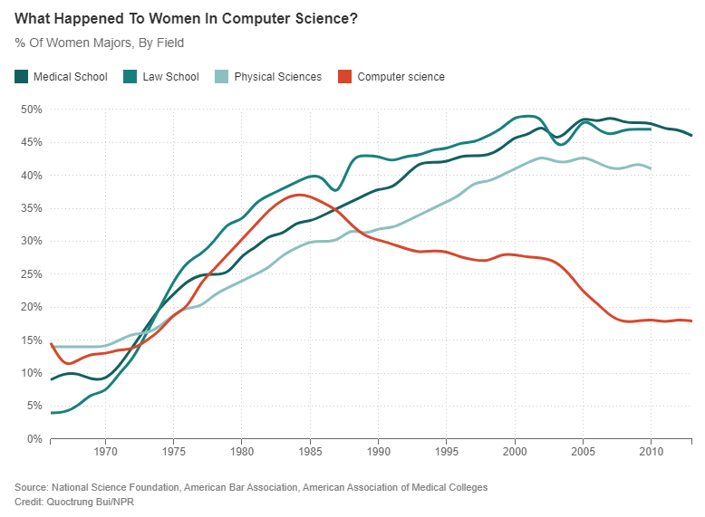
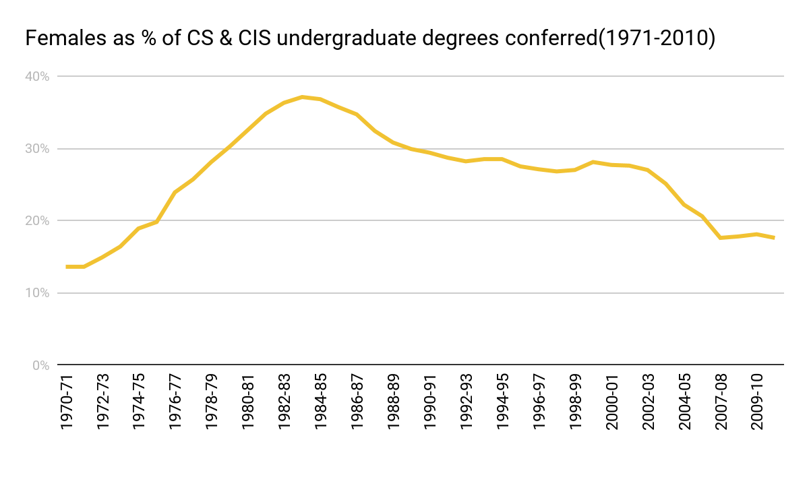
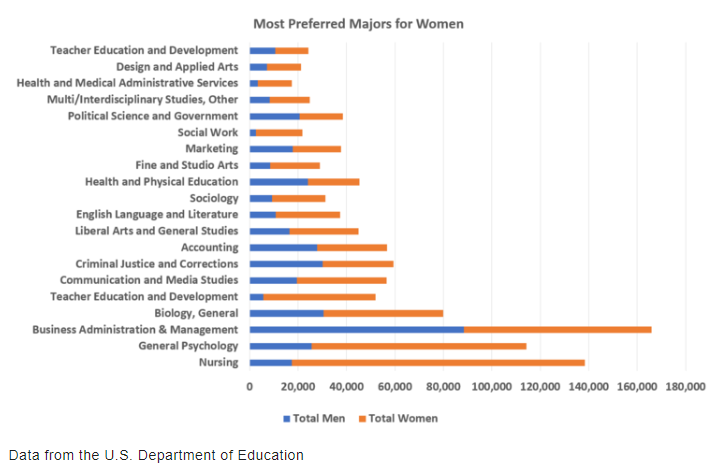
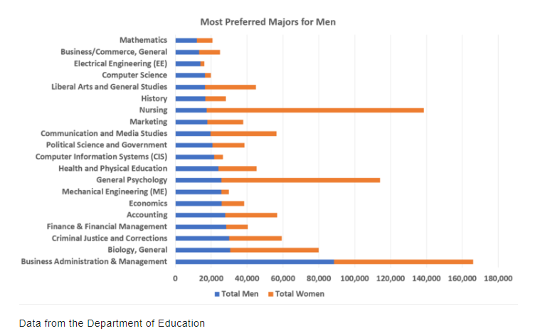

How did we get here?
The lack of diversity in Science, Technology, Engineering and Math (STEM) related fields is a well known issue. The issue is even more pronounced and alarming in computing fields than within STEM overall. Groups which are underrepresented in academia make up less of the jobs in STEM fields than they do in the overall workforce, for example women hold 57% of professional occupations while in science and engineering they represent only 26% of the workforce.
https://www.ncwit.org/ncwit-fact-sheet
It has not always been this way. Once upon a time, women were well represented within computing. Well originally, a computer was a person who performed calculations. When software engineering was first invented, women *were* the computers.
https://www.ncwit.org/ncwit-fact-sheet
The history of majoring in Computer Science began in 1962 when Purdue University became the first university to create a Computer Science department. At that time women were as well represented there as anywhere else in universities.
https://www.cs.purdue.edu/history/#:~:text=INTRODUCTION,Purdue%20University%20in%20October%201962
By 1967, computer programming as a career for women was so popular that it famously made it to Cosmo magazine. https://history.msu.edu/hst250/files/2017/06/Mandel67-nle-sm.pdf
Grace Hopper was quoted in an article titled “The Computer Girls”. Talking about the field of computer programming, she said “It's just like planning a dinner. You have to plan ahead and schedule everything so it's ready when you need it. Programming requires patience and the ability to handle detail. Women are naturals at computer programming.

When Dr. Hopper said this, women were actively recruited as computer programmers with little to no experience by taking an aptitude test that tested for logic. Coding jobs were exploding as corporations began rolling out automated processes and employers looked for logical, meticulous candidates, and gender stereotypes meant that women were thought to possess those skills. https://www.nytimes.com/2019/02/13/magazine/women-coding-computer-programming.html
Though her statement is a little misogynistic, Dr. Hopper talked about the detail and logic required to be a computer programmer. Also, note that the salary of $20,000 mentioned is equivalent to about $155,000 today. The entry requirements for jobs were based on aptitude testing, not CS degrees. Most of the women we’ve read about did have degrees with some element of formal logic training. As the degree and career became more popular, women began to earn a greater share of the CS degrees. Women continued to gain a share of the programming industry until 1984.
Since 1984, the representation of women in both computer science departments and in the industry has declined, while women’s representation in other challenging fields has increased.  Women in CS degrees peaked in 1983 and began to decline after that. What has driven this decline and why are women not choosing to pursue computer science?
 https://nces.ed.gov/programs/digest/d12/tables/dt12_349.asp
Despite the earning potential of a CS degree, Computer Science doesn’t even make the list of the top 20 most preferred majors by women. While men’s list of 20 most preferred majors includes Computer Science and Computer Information Systems. 

One theory that is reiterated across the published literature and the internet is that the rise of the personal computer initiated the decline of women in computer science. At first, this may sound a bit confusing. But to understand this theory we need to understand how the first PCs were marketed and the impact of that marketing.
When personal computers came on the scene, they were not as essential to everyday life as they are now. When the first PCs were available, for some they were work machines. But for the majority of people, they were a luxury or a toy. To understand early PC marketing though, we need to understand early video game history and early video game marketing.
In the 1970s, video games started to take off in a mainstream way. http://www.simfluent.com/tie-world/tie-games/how-video-games-went-from-geek-squad-to-mainstream/ In the early days, video games were marketed to families, and there wasn't quite such a gender imbalance. Check out this ad for the first home video game for a visual reference. https://youtu.be/0MnRkPvIjKE
But in the 1980s, the market had become saturated with low-quality games. This and other factors brought on the video game crash of 1983, and with that, the strategy changed. Ultimately, video game marketers decided the best way to sell video games was to market them in the toy aisle and to focus on one demographic to sell them. This made sense because other toys were already sold in this very gendered way. This article lays out this history very well.
To understand the environment in context, let’s take a look at some advertisements from the ’80s. https://youtu.be/J2jRuh1bAxw https://youtu.be/rxNjx_VWJ8U As PCs became available, they were marketed to boys, similar to how video games were marketed at the time. Here’s a local news piece from the early ’80s with a focus on computer education. Notice the teacher is a woman, but all of the students are boys. https://youtu.be/9I8R46hCiD8
In this era, PCs were commonly purchased by families for their sons. As gaming became more popular, this only became more entrenched in the marketing gender imbalance. A good overview can be found in this Adam Ruins Everything clip. https://youtu.be/i08CVkBxvBM
The impact of this in the short term was already strong. One anecdote shared by NPR is that of a mathematically talented female student who dropped out of Johns Hopkins University’s CS program after her first introductory course. She shared that the men in her class came in with a level of understanding she didn’t have and that despite the introductory nature of the course, the instructor belittled those who hadn’t come into the class with the basics. It took her ten years but she did eventually earn a Ph.D. in computer science. https://www.npr.org/sections/money/2014/10/21/357629765/when-women-stopped-coding
Her story is echoed in many others through that era. Before the boom of the PC, instructors expected that students came into their classes with no prior knowledge. As student experience began changing in the 1980s, professors changed their expectations as well – leaving those without that experience at a disadvantage. A home PC gave a student an incredible advantage.
As women began to disappear from CS classes, the lack of gender diversity became self-perpetuating. Despite the changing commercial environment for computers – they are now ubiquitous -- women didn’t see themselves portrayed in the profession nor did they see themselves in CS classes, so they didn’t see those as goals for them. With a little context, it starts to make sense that CS doesn’t top the most desirable majors for female students. https://inside.collegefactual.com/stories/the-most-popular-majors-for-women-men
What can we do as students to make things better? What can we do as we become employees in the tech industry to make it a more equitable environment? As part of an ongoing project regarding diversity in the Computer Science department at Portland State University, We (a group of student researchers) interviewed students to find out what impact student experiences and success. Our results will be available soon. Stay tuned.
This site is under construction